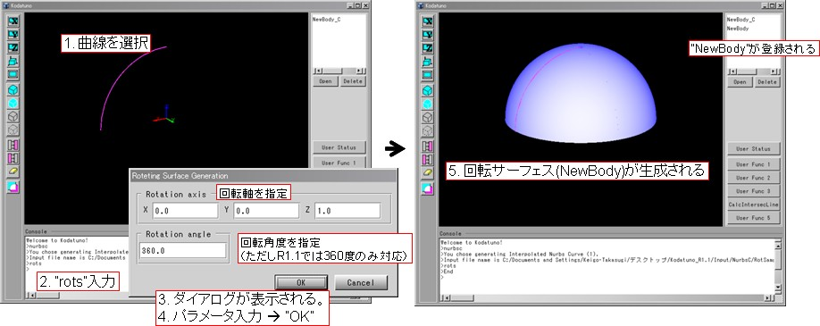
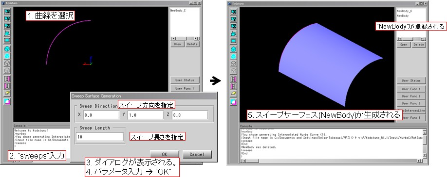
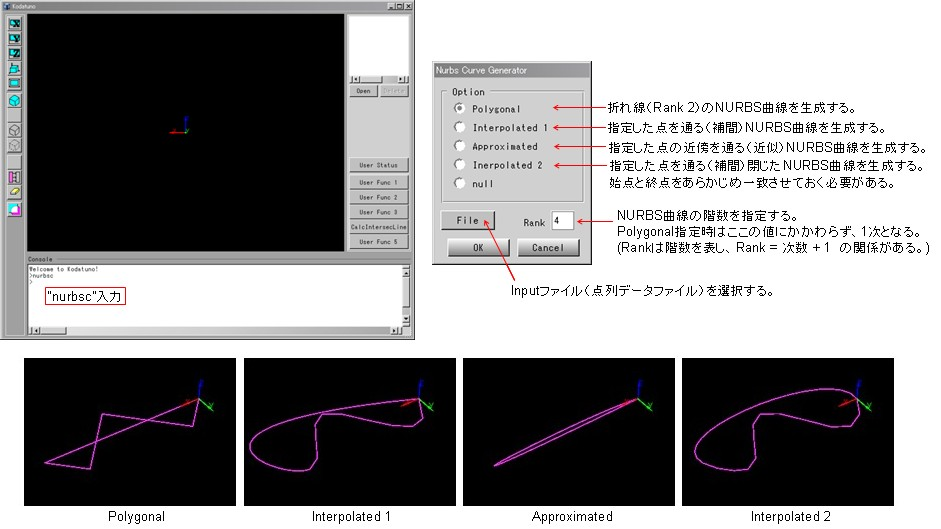
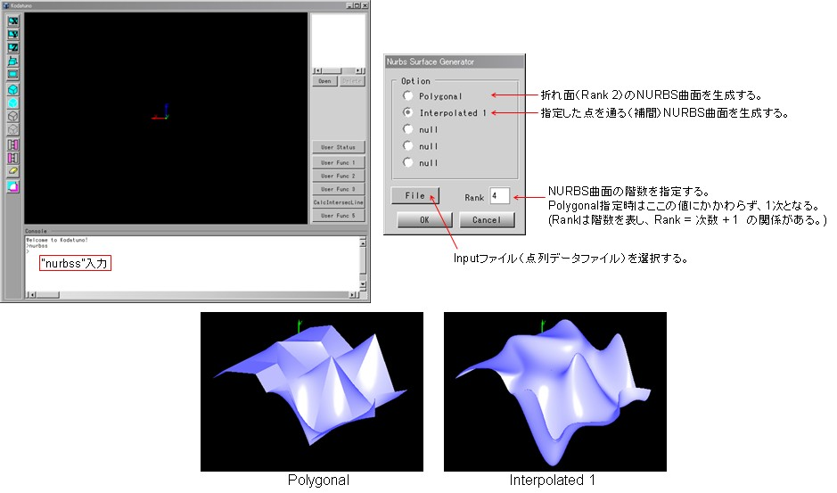
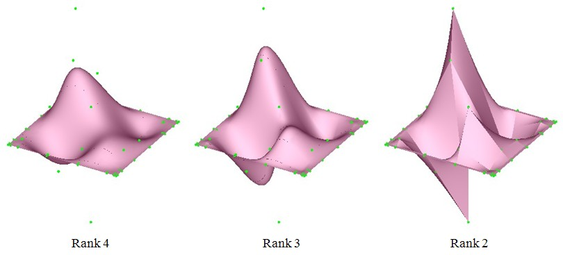

|
|
|
Prev
Index
Next |
W/S Versionが持つ機能
W/S Versionでは，あらかじめ種々の機能が用意されており， Kodatunoコンソールに登録されたコマンドを入力することにより，所定の機能を実行することができます． 登録されているコマンドを以下に示します．
- verinf -f
バージョン情報をコンソールに出力します．
引数fを指定すると，kodatunoの正式名称を出力します．
- open -N (File Name)
IGES/STLオープンダイアログを表示します．
引数Nを指定すると，その後に指定したFile Nameのデータをダイアログを表示することなく取得することができます．
- wire
選択されたBodyをワイヤーフレームで表示します．
引数：なし
- scale -r (Value)
現在のグラフィックの描画スケールを出力します．
引数rを指定すると，Valueで指定した値のスケールに変更します．
- tol -r (Value)
現在の描画の精度(トレランス)を出力します．
引数rを指定すると，Valueで指定した値のトレランスに変更します．指定できるトレランス値は1以上で， 値が小さい方が高精度な描画となります．デフォルト値は20です．
- cpview
コントロールポイントを描画します．
引数：なし
- surfinfo
曲面情報をコンソールに出力します． 引数：なし
- exp -r (Value)
引数rを指定すると，Valueで指定した倍率でBODYを拡大・縮小します．
- move -r (Value_X) (Value_Y) (Value_Z)
引数rを指定すると，Valueで指定した移動量だけでBODYを平行移動します．
- chbkcol -r (Value_R) (Value_G) (Value_B)
引数rを指定すると，背景色をValueで指定したRGB値の色へと変更します．
- rots
回転サーフェスを生成します． 1つの曲線を選択後，このコマンドを入力します．
回転サーフェス生成ダイアログが表示されますので，所定のパラメータを入力し"OK"ボタンで， 選択した曲線を360度回転させた曲面が生成されます．またのことき，"NewBody"という 名前で生成したNURBS曲面がBodyとして新たに登録されます．ただし，R1.1現在，回転角度は360度のみ対応している．
引数：なし．

［回転サーフェス生成の過程］- sweeps
スイープサーフェスを生成します．
1つの曲線を選択後，このコマンドを入力します． スイープサーフェス生成ダイアログが表示されますので，所定のパラメータを入力し"OK"ボタンで， 選択した曲線をスイープさせた曲面が生成されます．
引数：なし．

［スイープサーフェス生成の過程］- nurbsc
NURBS曲線を生成します．
このコマンドを入力すると，NURBS曲線生成ダイアログが表示されますので，生成したいNURBS曲線の種類及び， Inputファイルを選択し，"OK"ボタンを押すと，1つのNURBS曲線が生成されます．またのことき，"NewBody_C"という 名前で生成したNURBS曲線がBodyとして新たに登録されます．
Inputファイルは，制御点のx-y-z座標を1行として点数分記述します．ファイル形式はCSV形式とし，ファイル拡張子は ".inp"とします．サンプルInputファイルが"Kodatuno_R***\Input\NurbsC"にあります．
引数：なし．

［NURBS曲線生成の過程］- nurbss
NURBS曲面を生成します．
このコマンドを入力すると，NURBS曲面生成ダイアログが表示されます．生成したいNURBS曲面の種類及び， Inputファイルを選択し，"OK"ボタンを押すと，1つのNURBS曲面が生成されます．またのことき，"NewBody_S"という 名前で生成したNURBS曲面がBodyとして新たに登録されます． 引数：なし．

［NURBS曲線生成の過程］- chrank -r (Value_U) (Value_V)
引数rを指定すると，Valueで指定した階数の曲面へと変更します． 現時点では曲面のみへの対応となっています． 階数を上げる場合は注意が必要です．階数はコントロールポイントの数に依存します．

［NURBS曲面の階数の変更例］
※N/G Versionでは，これらのコマンドは用意されていませんが，1.2 階層構造 で示したように， KodatunoではGUI部とGE部が独立しているため，上記の操作の内，NURBS曲面/曲線の生成に関しては GE部が用意する関数として用意されています．
| Copyright(C) Kodatuno Development Team, 2011 | Last modified: Nov. 11, 2011 |